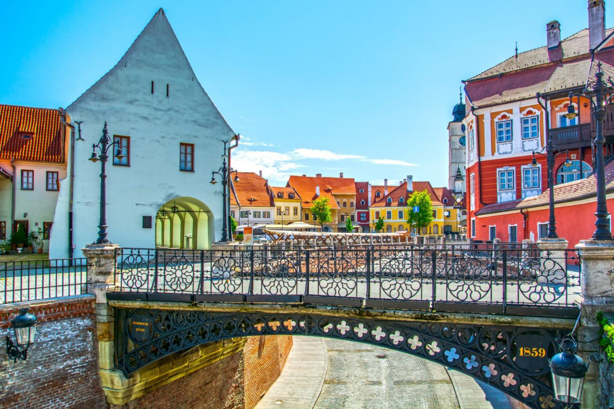
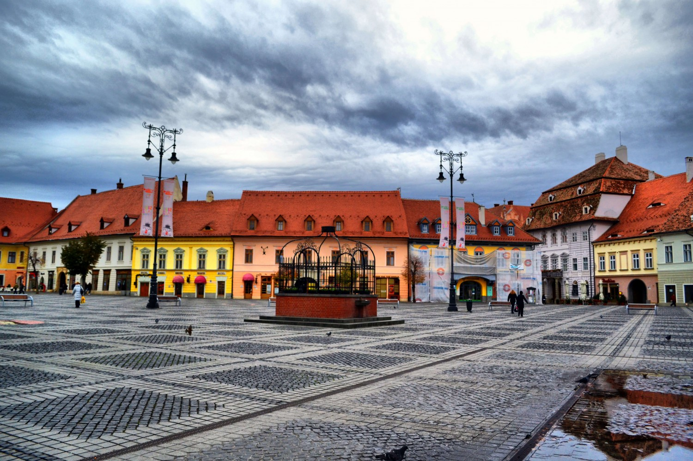
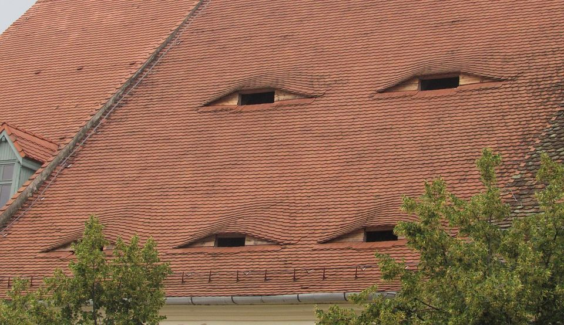

Sibiul. Un oraș care nu te întâmpină cu o explozie de culori, ci cu o liniște brună, veche. Am ajuns acolo într-o toamnă târzie, când aerul mirosea deja a fum stins și a melancolie depusă pe ziduri. Nu era o excursie plănuită ca o evadare, ci mai mult ca o **retragere**. O încercare de a schimba peisajul exterior, în speranța că voi schimba și peisajul interior.
M-am plimbat pe străzile pavate, admirând ferestrele cu ochi triști, ferestre ce păreau să fi văzut prea multe secole și prea puține certitudini. Fiecare casă, cu acoperișul ei de țiglă roșiatică, părea să șoptească o istorie despre plecări și despre așteptări care nu s-au mai împlinit niciodată. Când treceam prin Piața Mare, mă simțeam ca o notă falsă într-un concert clasic; toți ceilalți păreau să știe de ce sunt acolo, ce caută, pe când eu purtam în mine doar o **interogație mută**.

Pe Pod, cu Adevărul
Am petrecut ore întregi pe **Podul Minciunilor**. De câte ori am citit legenda lui? De câte ori mi-am spus că poveștile despre minciunile spuse acolo erau doar mituri? Dar stând singură pe balustrada rece, ascultând zgomotul mașinilor de dedesubt și simțind vântul aspru, am realizat ceva dureros: cea mai mare minciună pe care o spuneam era aceea că eram bine. Minciuna nu era despre trecut, era despre prezent.
M-am oprit la un moment dat să privesc în jos, la casele de sub pod, acele curți interioare ascunse. Mi-am amintit de sufletul meu: bine ascuns sub o structură aparent solidă. Sibiu nu mi-a oferit soluții, dar mi-a oferit un **cadru perfect** pentru a-mi simți pe deplin lipsurile. A fost un oraș care m-a obligat să mă așez lângă mine, să beau o cafea amară și să recunosc fără grabă că, de fapt, venisem în căutarea a ceva ce nu lăsasem acasă, ci pierdusem undeva pe drum.

În ultima seară, privind de la distanță silueta orașului luminat slab, am știut că voi pleca la fel de goală pe cât am venit, dar nu la fel de **naivă**. Sibiul, prin frumusețea sa sobră și greutatea istoriei sale, mi-a șoptit că nu e nicio rușine să porți o melancolie veche. Că unele răni nu se vindecă, ci pur și simplu devin parte din arhitectura ta interioară.
M-am întors acasă cu o singură certitudine: Farul Interior al Sibiului arde mereu, dar e o lumină caldă, tristă, care te lasă să fii tu însuți în plinătatea nefericirii tale. Și, uneori, acesta este exact lucrul de care ai nevoie.
Vrei să intri și mai mult în atmosfera melancolică?
Încearcă Jocul Sibiu!